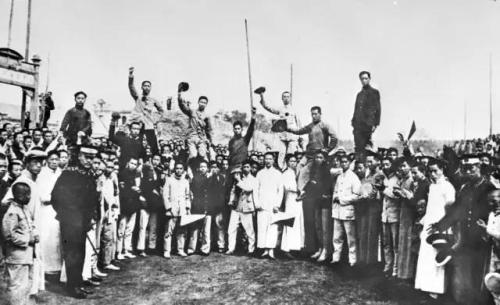

历史原因
新思想与社团
社团组织在中华民国的发展，包括少年中国学会、工学会、新民学会、新潮社、平民教育讲演团、工读互助团等等，为五四运动在全国的开展奠定了组织基础。
高等教育发展
到了民初，北京大学、北京高等师范学校（现北京师范大学）等高校获得进一步的发展，尤其是北京大学，在校长蔡元培的领导下，引进了开放的学风，提出了“思想自由，兼容并包”的办学方针,北大同时注重培养学生独立自主开放进步的思想和精神，这种思想和精神成为五四运动的重要动力。
事件起因
1919年1月，第一次世界大战战胜国在法国巴黎召开所谓的“和平会议”，中国作为第一次世界大战协约国之一，参加了会议。
中国代表在和会上提出废除外国在中国的势力范围、撤退外国在中国的军队和取消“二十一条”等正义要求，但巴黎和会不顾中国也是战胜国之一，拒绝了中国代表提出的要求，竟然决定将德国在中国山东的权益转让给日本。
在这种情况下，和会代表提交了关于山东问题的说帖，要求归还中国在山东的德租界和胶济铁路主权，以及要求废除《二十一条》等不合法条约。
在巴黎和会中，中国政府的外交失败，直接引发了中国民众的强烈不满，从而引发了五四运动，在这样强大的压力下，中国代表最终没有出席巴黎和会的签字仪式。
